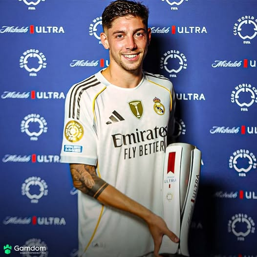

Welcome!
This site offers a recap and detailed analysis of Real Madrid’s 1-0 victory over Juventus in the 2025 Club World Cup. Whether you're a fan, analyst, or just curious, you're in the right place.
Match Summary
This quarterfinal match in the 2025 Club World Cup featured Italian club Juventus and Spanish giants Real Madrid. As the players took the pitch in the swealtering heat in Miami, Florida, many fans roared in reaction to the global stars. The goalless first half was dominated by Real Madrid, but the best chance fell in favor of Juventus with striker Kolo Muani barely missing. The second half was once again dominated by Real Madrid but academy product Gonzalo Garcia headed the eventual winner home for the Spanish giants.
- Kylian Mbappe made his debut in the tournament after being hospitalized with sickness
- New signing Trent Alexander-Arnold notched his first assist for his new club
- Midfielder Fede Valverde was everywhere on the pitch, and won Man of the Match as a result 
Notes:
Explore More
Click below to see full match stats, player ratings, and interactive fan feedback.